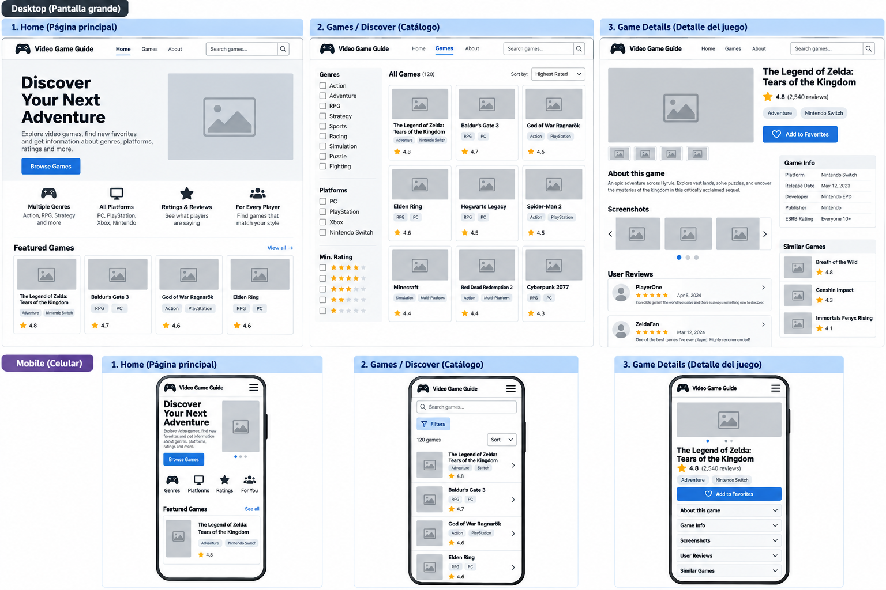

Site name & purpose
Video Game Guide tells visitors exactly what the site offers: guidance for discovering video games. The name is easy to remember and broad enough to cover different genres and platforms.
The site will help players find games that fit their interests by browsing genres, platforms, ratings, and short descriptions. A home page will introduce the experience, a games catalog will support discovery, and game details will help visitors decide what to try next.
Visitor scenarios
- “I have a Nintendo Switch and want an adventure game. Which games match my platform and genre?”
- “I want a highly rated RPG. What is it about, and does its description sound right for me?”
- “I enjoyed one featured game. Where can I find more games to compare?”
Visual direction
Deep navy anchors the page, bright blue highlights discovery actions, and a pale background keeps game information easy to scan.
Color palette
- Deep navy · #14243BHeadings and the header; shown here in the page banner.
- Action blue · #155FC2Links and primary calls to action; shown in the accent below.
- Cloud · #F3F6FAPage background and quiet section contrast.
Typography
Arial (with Helvetica and generic sans-serif fallbacks) is the only font family. Bold weights distinguish headings and game titles; regular weight keeps descriptions and supporting information readable. This page uses the same type choices.
Home page layout by screen size
Small screens
A compact title and navigation lead into a stacked hero: discovery message, short introduction, browse action, then game imagery. A brief row of discovery cues precedes featured games in a single-column list. Each item shows its title, genre, platform, rating, and a route to more details.
Large screens
The header places the name and navigation side by side. The hero pairs introduction and browse action with game imagery horizontally. Discovery cues sit across a row; featured games appear in a multi-column group with a clear link to the catalog. The catalog will organize browsing, and a separate details view will expand on each game's description and rating.
The home page introduces discovery; catalog browsing and game details are planned destinations, not part of this site plan's implementation.
Desktop and mobile three-page proposal

Open the original-size proposal to zoom in and read the details.

- Home: Introduce game discovery with a browse action, genre and platform highlights, ratings, and featured games.
- Games catalog: Search and sort games, filter by genre, platform, and minimum rating, and open a game's details. Desktop uses a filter sidebar and card grid; mobile uses a filters control and a compact list.
- Game Details: Show the game's description, platform, rating, game information, screenshots, user reviews, and similar games, with an Add to Favorites action. Mobile stacks the content with expandable information sections.